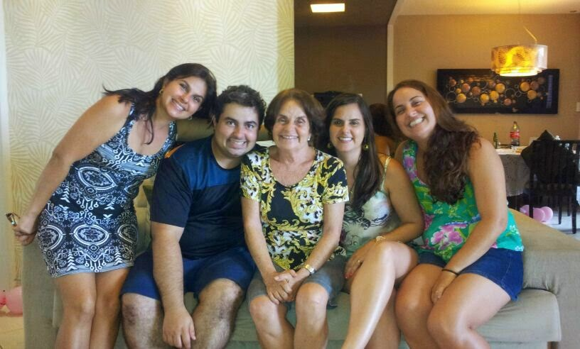

Mrs. Sonia Vilas Boas
The super
mother!

Mrs. Sonia Vilas Boas, third from left, with her amazing children in a regular mother's day.
Here's a time line of Ms. Sonia's life:
1947
- Born in Aracaju, State of Sergipe - Brazil
1972
- Graduated in Social Work
1973
- Got Married
1975
- Had her first child
1977
- Had her second child
1980
- Had her third child
1983
- Had her fourth child
1997
- Became a widow
2017
- Still being a
GREAT
Mother
"This sounds like a clichê, but Sonia is the best mother ever! =)"
If you have time, you should read more about this incredible human being on her
Wikipedia entry
.